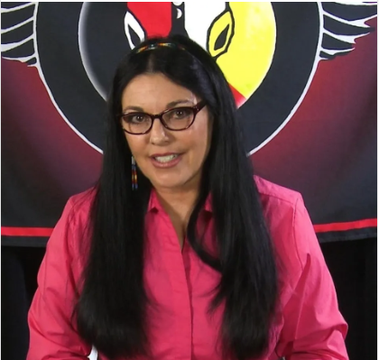

After experiencing a successful traditional ceremony to have a baby, Hyapatia began studying with two medicine men, a medicine woman (Gladys Tantaquideon, brother to the last chief of the Mohicans), and a Hawaiian Kahuna. These teachers shared traditional wisdom from the Mayan, Lakota, Cherokee, Hawaiian, and many other cultures. In 2001 Hyapatia was elected to the prestigious position of Blessed Woman for the Lost River band of the Cherokee. Every weekend she taught the people to speak Cherokee, conducted pipe ceremonies and presided over sweat lodges, healing ceremonies. As Hypatia began to teach the many things she had learned from the elders, it became apparent that this information was just as useful to the members of the Lost River band as it had been to her. Medicine Wheels (one example below) help us to remember and comprehend this complicated system. This collection became known as Native Strength as it awakens the strength that is inside each of us. Hyapatia knew sharing this knowledge with the rest of the world would help heal many who were suffering. It would be a crime to withhold knowledge that could help others to live a better life.